| 日付 | 2026年8月22日（土） |
|---|---|
| 山域 | 丹沢 |
| メンバー | グループ（5名） |
| 山行形態 | 日帰り |
| アクセス | 電車、バス |
| ルート (Map) | 西丹沢ビジターセンター (9:04) - (10:03) 本棚 - (11:11) 善六のタワ - (12:11) 畦ヶ丸 (12:39) - (14:36) 大滝橋 |
6年振り3回目の畦ヶ丸。
今回はサークル山行の企画リーダーとして行ってみる。
西丹沢ビジターセンターから出発。標高545m。
本日は午後から天気が崩れる予報だが、今はまだ青空が見えている。
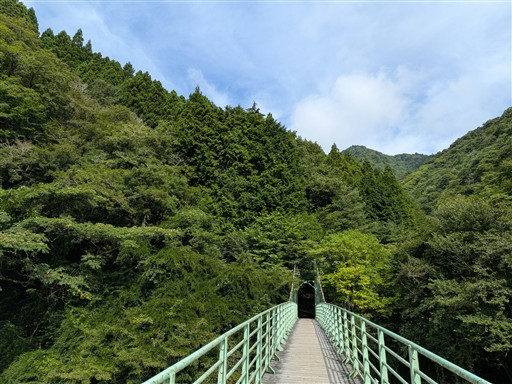
白い河原が美しい。
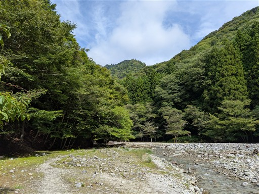
いくつかの堰堤を越えていく。
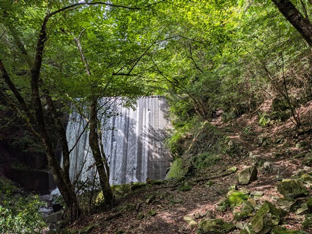
そして何度も沢を渡り返す。水の色がきれいだ。
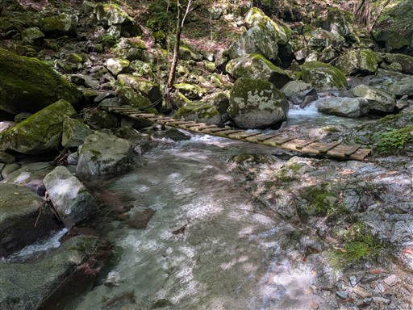
下棚に到着。規模は小さいが落差は大きな滝だ。
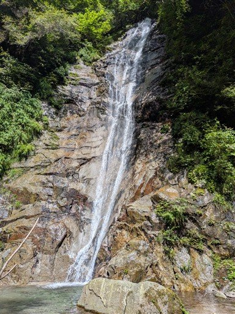
沢沿いの道は続く。
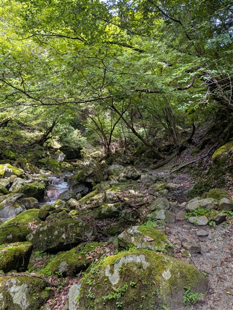
続いて本棚に到着。久々に来たがいつ見ても立派な滝だ。
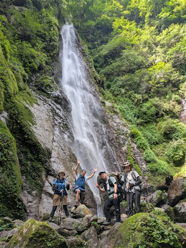
滝の落ち口。水しぶきが美しい。
近づくとびしょ濡れになってしまう。
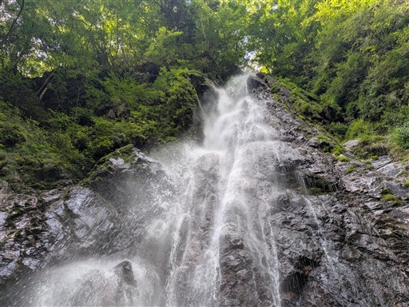
本棚から流れ落ちる沢は美しい。
沢に至る道はちょっと難易度が高い
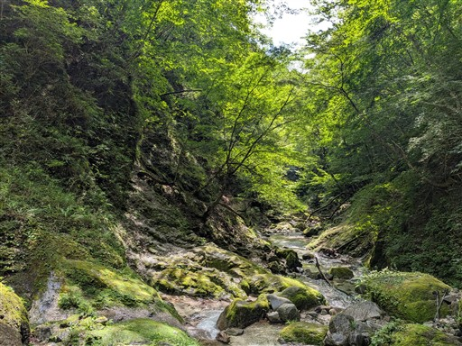
善六のタワ。両サイドが切れ落ちたちょっと危険な場所。
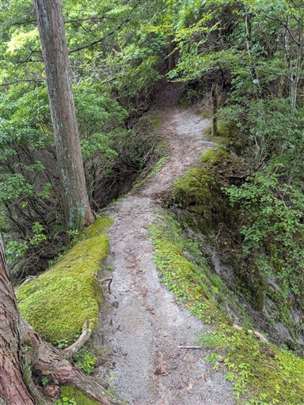
最後の登り。山頂付近はブナ林が広がる。
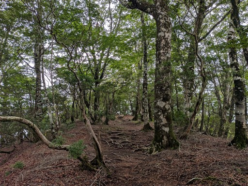
畦ヶ丸に到着。標高1292m。
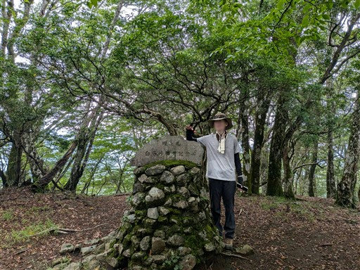
昼食を取ったら出発。山頂直下に建つ避難小屋はものすごくきれいだ。
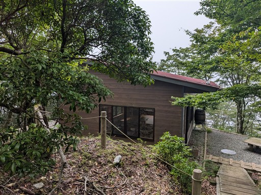
下山道は沢沿いの道とトラバース道が現れる。
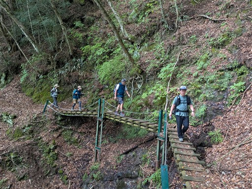
きれいな淵。
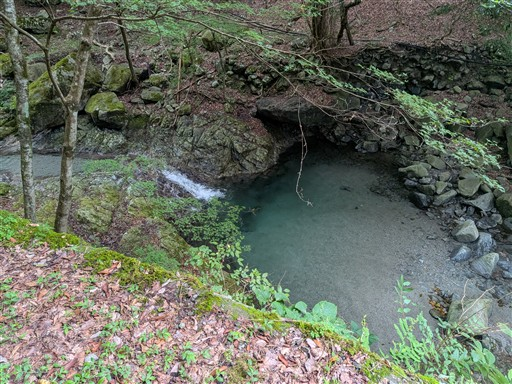
無事、大滝橋バス停に到着。標高450m。
バスの10分前にちょうど下山できた。一仕事終えてほっと一息。
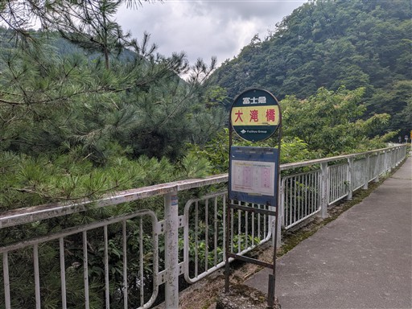
帰りはぶなの湯に立ち寄る。
温泉に浸かっていると大雨が降ってくる。危ない所だった。
バスの時間まで長かったが、つまみとビールであっという間に時間が経った。
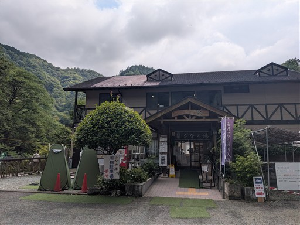
新松田で飲み直した後帰宅。ちょうど花火が上がっていて駅のホームから良く見えた。
山行リーダーとして挑んだ今回の山。慣れないところがあり大変だったが
雨に降られず、温泉、飲みまで無事やり終えることができ、楽しい登山ができた。
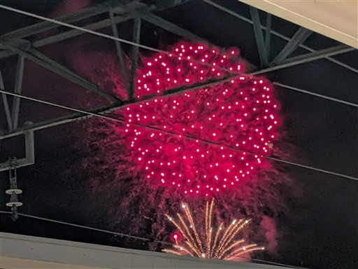